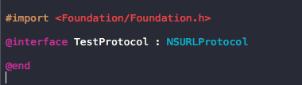
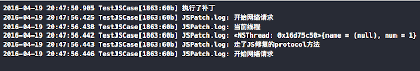
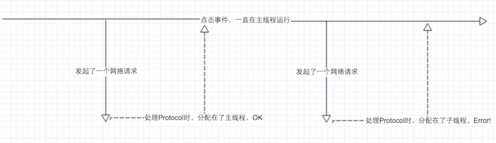
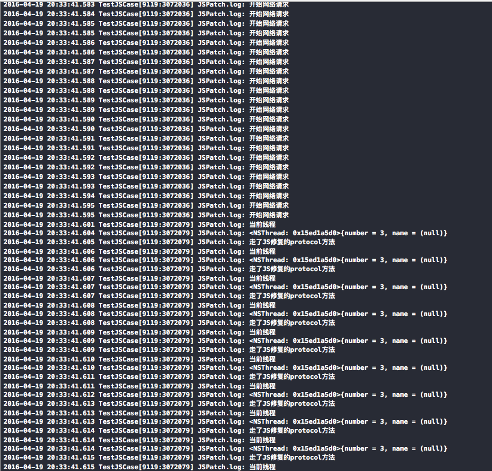
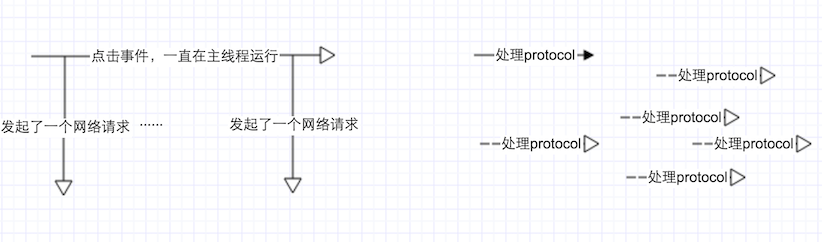

用JSPatch修复了一个主流程模块的事件点击函数，在这个事件中，包含了网络请求（不止一个，连续多个请求）。包上线了之后，成功的解决了线上的Bug。但是，过了一天后，有同学发现在ios7系统下的主模块入口进不去了，正好是上次修复的bug,😱！
开发同学组织起来准备拯救世界，问题一点点的被挖掘出来。
涉及系统ios7(当时确定是在ios7的设备，测试设备有限，我想32位的设备也是存在这样的问题的)
涉及版本xxx
奔溃激增在某一JSPatch发版后（在我们修复了bug之后，有人又发了一版）
会不会是后修复的文件引起的问题？删除这个文件，果然生效。
删除之后修复的文件，发布JSPatch到线上，这个问题解决了。
bug是解决了，但是真正的原因还是没有分析出来。经过后期的追踪，终于找到了问题的关键所在。这里给出一个Demo，欢迎大家下载验证。回到剖析问题的话题，当时我们修复了一个主流程的点击事件的bug,这个点击事件是会触发多个网络请求的。之后修复的bug，就是和这个网络请求有关。

修复了继承自NSURLProtocol的+(BOOL)canInitWithRequest:(NSURLRequest *)request方法，那么这个方法的触发条件是什么？
现在，JSPatch修复的方法点击之后又进入了JSPatch的方法中了，这里大家需要了解一下JSPatch执行的线程问题。主要看这么一句
JavaScript 语言是单线程的，在 OC 使用 JavaScriptCore 引擎执行 JS 代码时，会对 JS 代码块加锁，保证同个 JSContext 下的 JS 代码都是顺序执行。所以使用 JSPatch 替换的方法都会在这个锁里执行，无法并行执行，这导致如果主线程和子线程同时运行了 JSPatch 替换的方法，子线程就会卡住主线程。当前线程是否是主线程，这个其实我们可以变换一下思路，在之前提供的demo工程中,不直接修复canInitWithRequest方法，先在这个方法中打印当前的线程，再在JS中执行tempSelector方法返回，更改的地方有
OC:
+ (BOOL)canInitWithRequest:(NSURLRequest *)request {
NSLog(@"当前线程：%@",[NSThread currentThread]);
return [self tempSelector];
}
+ (BOOL)tempSelector {
// 这个方法将在JS中修复
return YES;
}
JS:直接替换TestProtocol.js内容为
defineClass('TestProtocol', {}, {
tempSelector: function() {
console.log('当前线程');
console.log(require('NSThread').currentThread())
console.log('走了JS修复的protocol方法');
return true;
},
})ios7日志图片

根据日志，我们预测了ios7上的JSPatch的执行线程为：

ios8,ios9不会奔溃，我们打印了相应的log从日志分析中，我们会读到想要的信息
ios9日志图片

从日志中得出ios9上的执行顺序有了变化

区别还是很大的，ios7上修复的JSPatch，会并行执行。ios8、9上则是顺序执行。看来cpu在对JSCore操作分配顺序上ios7和ios8、9存在了很大的区别。这也就解释了为什么在ios8/9上没有存在子线程卡死主线程的情况。
后期发现这个问题似乎不是系统问题，可能是32位的原因。设备有限，等待验证。